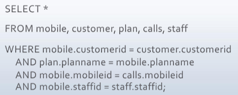

Any operation involving more than one table/entity, such as querying ontwo tables, will require a JOIN operation
SQL specifies the links between tables in the query itself
To use fields from two tables in a query, specify both tables in the FROM clause, separated by a comma, and
then specify the linking criteria (the common attribute that is used in one table to refer to a key in another)
Example of two tables linking to each other
In this case, the 'Mobile' and 'Customer' tables have a common attribute of Customer_ID, which will be used to join the two tables.
Linking criteria can be specified within the FROM clause when the tables are declared using [... JOIN ... ON ...] clause.
Example of linking criteria specified in FROM clause
This allows LEFT JOIN and RIGHT JOIN to be performed properly.
In the WHERE clause:
Linking criteria can be specified in the WHERE clause as a joining condition.
Multiple linking criteria can be combined using the AND keyword as working with normal query conditions.
Linking criteria and other data conditions can also be combined using the AND keyword.

Example of linking criteria specified in WHERE clause
A limitation here is that only INNER JOIN can be specified in WHERE clause.
Other types of JOIN will required users to put linking criteria in the FROM clause.
An INNER JOIN is made by specifying two fields (one in each table) that contain common values.
Linking criteria in INNER JOIN can be specified either in the FROM clause or in the WHERE clause.
Outer Join
An OUTER JOIN specifies that all records from at least one table should be displayed, even if they have no match with in the other table.
Linking criteria in OUTER JOIN can only be specified in the FROM clause using [... JOIN ... ON ...].
3 types of Outer Join:
LEFT OUTER JOIN
RIGHT OUTER JOIN
FULL OUTER JOIN
Self Join
A Self JOIN is a join of a table to itself. This is a Unary relationship.
The table name appears twice in the FROM clause with two different alias for qualifying fields (Table alias is mandatory in this case).
The linking criteria in Self JOIN can be specified either in the FROM clause or in the WHERE clause, but table alias is required for qualifying linking fields.
Apart from the above, there are some other JOIN types that are rarely used:
Natural Join
NATURAL JOIN is a type of INNER join that makes the database system automatically identify the linking fields
based on the field name (e.g: If the system finds two fields with similar names in two specified tables, it will
automaticaly consider those two fields as the linking criteria without expressly being declared by users.)
This might cause confusion for the database as there could be more than one pairs of similar field name, so it is rarely used.
Syntax: [SELECT ... FROM table_1 NATURAL JOIN table_2]
Unbounded Join (Cross Join)
An UNBOUNDED JOIN is the combination of every row in one table with every row in the other table, regardless of their values.
The number of rows in the result will equal to the multiplication of the numbers of rows in both tables (called a Cartesian product).
In reality, this type of JOIN is barely used because it is of almost no value or benefit.